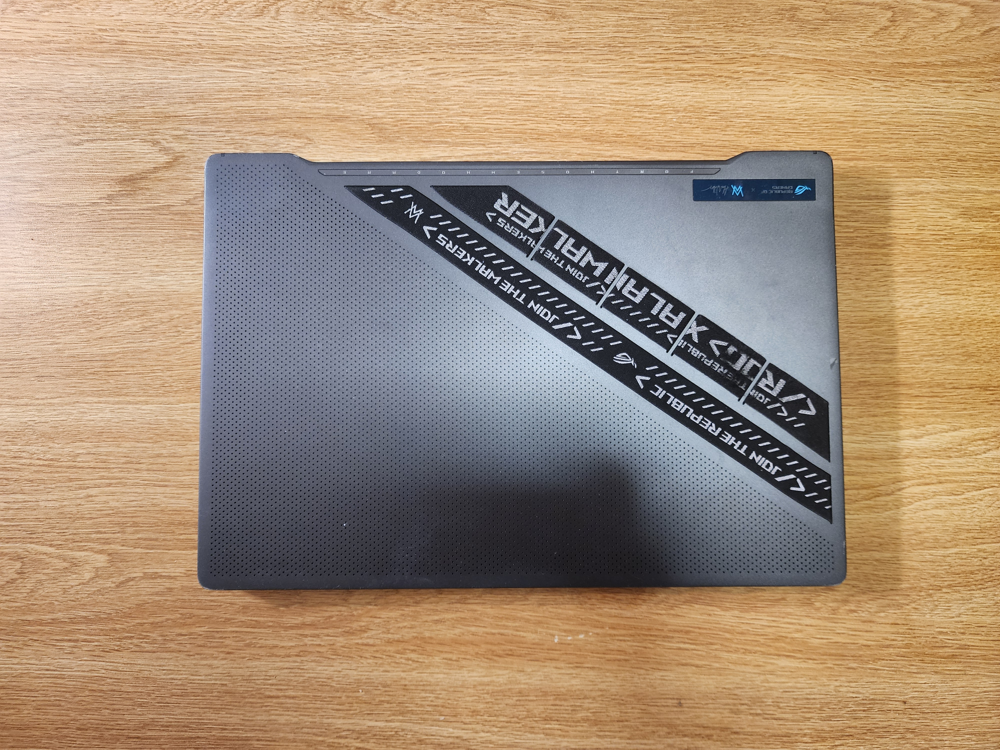
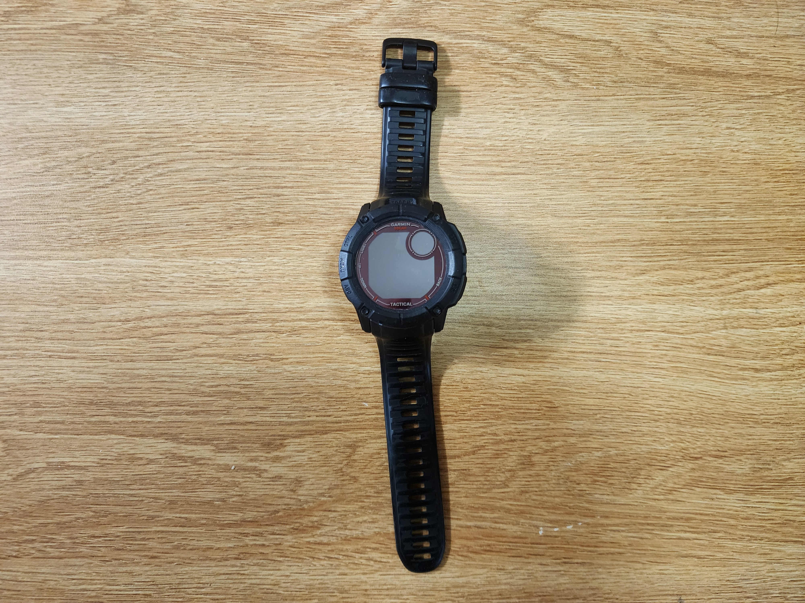
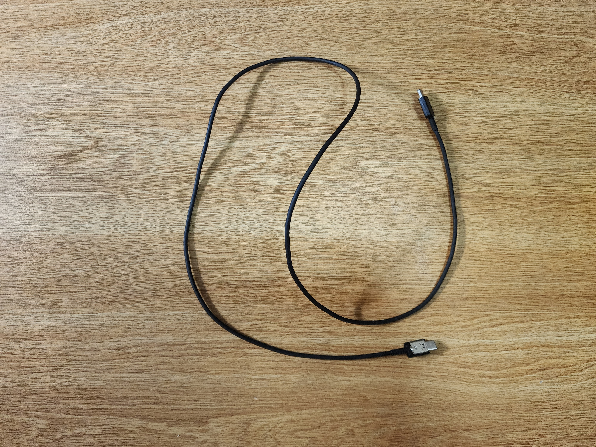
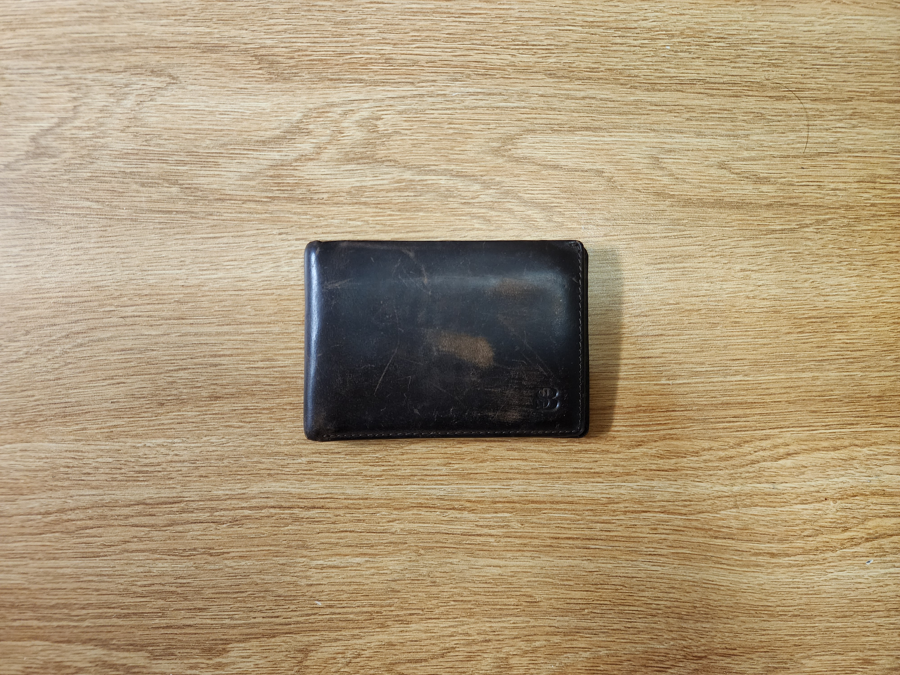
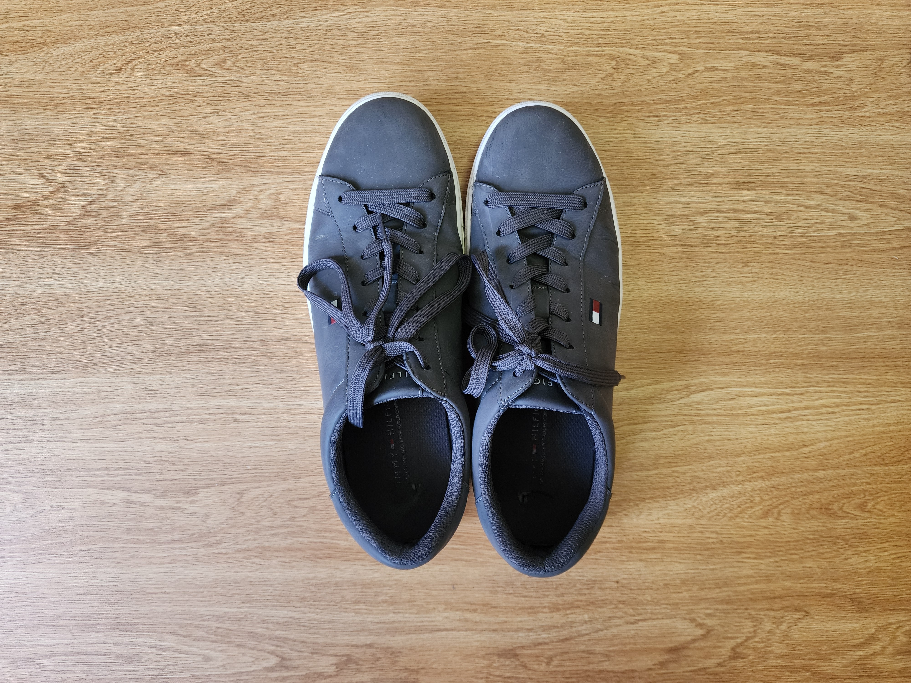
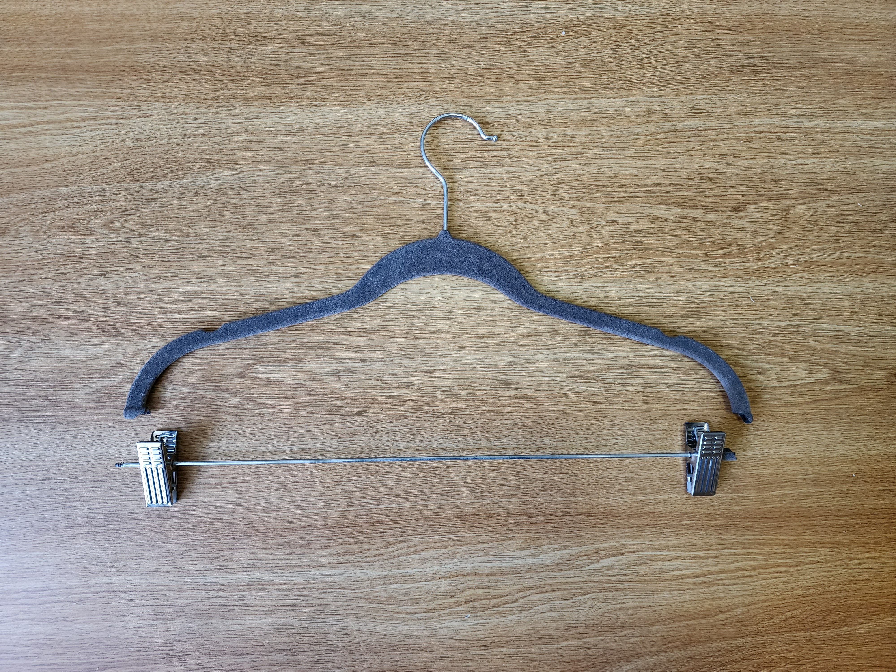
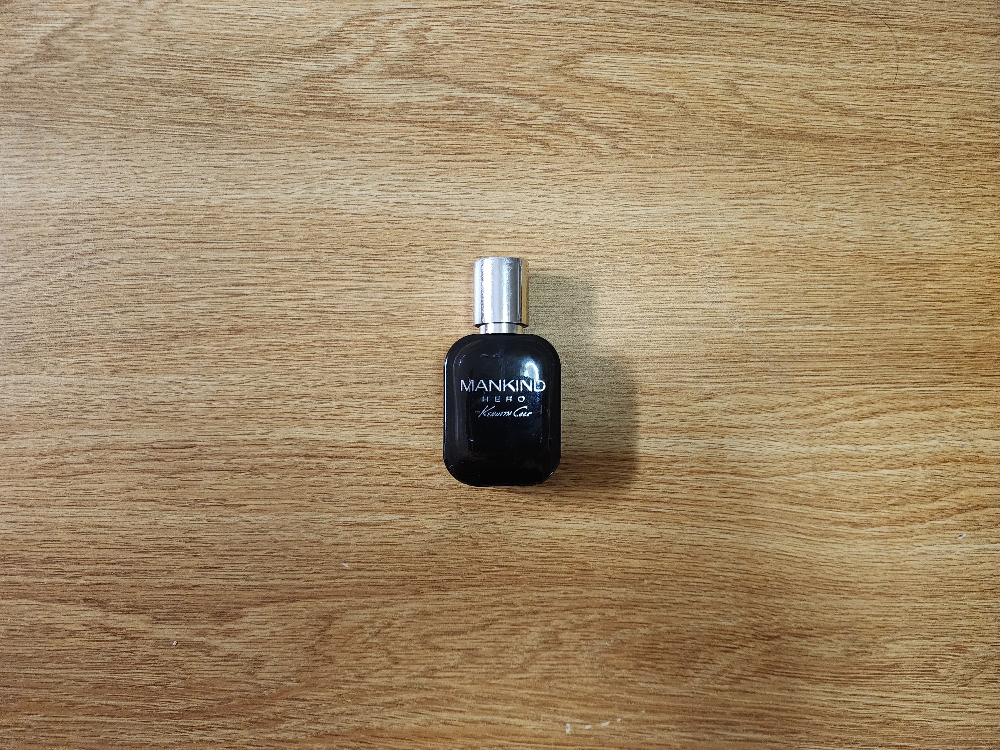

Preface
I decided to start recording my weekly disposal habits not because I’m particularly obsessed with garbage, but because I started noticing a pattern of accumulation that was cramping my space—both physically in my room at my Busch Apartment and mentally. As a student juggling CS projects and internships, my environment tends to reflect my stress levels: chaotic and cluttered.
Specifically, I want to track the lifecycle of the technology and gear I invest in. I spend a lot of time researching specs, but I rarely analyze when and why I let things go. By documenting this, I hope to see if I’m buying things for the long haul or just cycling through upgrades for the dopamine hit.
Overview
This week was significantly heavier on the "value" scale than usual. Unlike previous weeks filled with takeout containers from King of Gyro or energy drinks, this week involved letting go of serious hardware. The total monetary value is likely the highest it’s ever been due to a few significant tech sales.
The Tech Turnover
Featuring the ASUS ROG G14 Laptop and Garmin Instinct 2X Solar. These were functioning tools moved on to make room for upgrades.
Worn-Out Daily Drivers
Includes a black leather wallet and grey Tommy Hilfiger sneakers. Items that served honorably until they had nothing left to give.
The Empty Vessels
Mankind Hero Cologne, a frosted lightbulb, and an Avatar popcorn bucket. The shells of past experiences clearing out of the workspace.
Item Disposal Data
| Item | Weight | Source | Location | Cost | Owned | Mode of Disposal | Condition |
|---|---|---|---|---|---|---|---|
| ASUS ROG G14 Laptop | ~3.6 lbs | Amazon | Desk | ~$1,400 | 3 Years | Sold | Good |
| Garmin Instinct 2X | ~67g | Gramin Store | Wrist | ~$450 | 1 Year | Sold | Used |
| USB-C Cable | ~30g | Samsung | Drawer | ~$10 | 5 Years | Trash | Frayed |
| Leather Wallet | ~50g | Amazon | ~$40 | 4 Years | Trash | Worn Out | |
| Tommy Hilfiger Sneakers | ~2 lbs | Macy's | Closet | ~$80 | 2 Years | Donated | Worn |
| Hanger | ~40g | Target | Closet | ~$1 | 2 Years | Trash | Broken |
| Mankind Hero Cologne | ~100g | Macy's | Drawer | ~$70 | 1 Year | Recycled | Empty |
| Frosted Lightbulb | ~30g | Home Depot | Lamp | ~$3 | 3 Year | Trash | Burnt Out |
| Avatar: Fire and Ash Bucket | ~150g | Rutgers Cinema | Desk | ~$15 | 1 Month | Recycled | Used |
Disposal Gallery

ASUS ROG G14

Garmin Instinct 2X

USB-C Cable

Leather Wallet

Tommy Hilfiger Sneakers

Hanger

Mankind Hero Cologne

Frosted Lightbulb

Avatar: Fire and Ash Bucket
Coda
Converting unused tech back into cash feels like a win. My room is starting to look less like a storage unit and more like a place to actually get work done. I’m riding this momentum into next week, where I plan to tackle the paper chaos accumulating on my bookshelves.